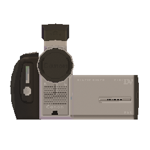
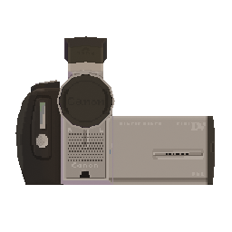

3D modelling and texturing project based very closely on the Canon MVX25i camcorder. this was modelled over the course of a couple of days, then textured over the course of 5 days (with a several month break halfway through). the entire workflow was completed in Blender. the model is very crudely rigged to allow control of the eyepiece, wing, and lens cap. the front-page and showreel were also rendered in Blender, with a the 2D overlay made using Inkscape and the background featuring NASA's Deep Star Map from 2020.
i'm really proud of this! the details took absolutely ages but i got a lot of practice working in this texel-art style, and with translating a real life object into 3D. this project also significantly developed my texture painting skills; i learned a lot with regard to Blender's texturing tools and also my new drawing tablet.
918 triangles - 512x512 texture - 4 armature bones
 
